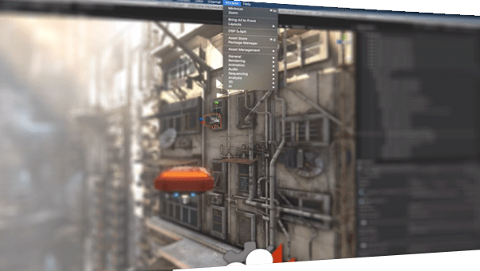

DOTS Hybrid Renderer
The Hybrid Rendering package provides systems and components for rendering ECS entities.

The term "hybrid renderer" is used because the renderer uses GameObjects, such as the camera and lights, to render ECS entities.
Overview
An entity is rendered if it has both a LocalToWorld component, from the Unity.Transforms namespace, and a RenderMesh component, from the Unity.Rendering namespace. The Hybrid Renderer systems adds other components needed for rendering, such as RenderBounds and PerInstanceCullingTag, automatically.
GameObject to entity conversion
To convert GameObjects in a scene to entities, the conversion system looks for a MeshRenderer and MeshFilter component on each GameObject and converts them into a RenderMesh component on the entity.
The conversion also reads the Transform of the GameObject and adds a corresponding LocalToWorld component to the entity created for that GameObject. (Depending on the Transform properties, the conversion can also add Translation, Rotation, and NonUniformScale components.)